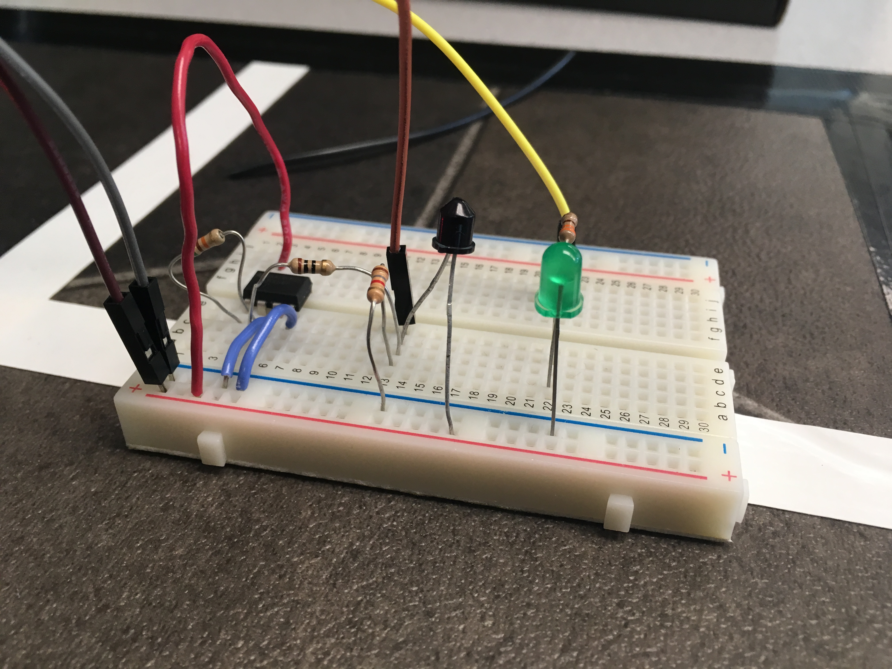
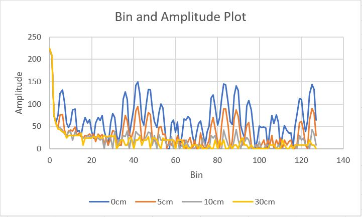

Objective
The objective of the lab is to add sensors to our robot so that it will be able to detect a 660 Hz whistle signifying the beginning of the maze mapping and detect nearby robots and ignore decoy robots.
Acoustic Team
Materials
• 1 Arduino Uno • 1 Electret Condenser Microphone • 1 LM358 Op Amp • 2 Caps: 6.8uF, 100nF • Resistors: 1 - 330, 1 - 3.8K, 2 - 10K, 1 - 380K OhmsThe Lab
The purpose of this lab was to implement a microphone capable of detecting a 660 Hz signal, which would allow our robot to start moving at the beginning of the competition. To do this, we first tested out how the Arduino, with support from the FFT library, reacted to a 660 Hz sine wave from the function generator- an amplitude of 1.65 Vpp was used with an offect voltage of 825 mV. This was confirmed by hooking the output to an oscilloscope, also shown below.
When we plotted the data collected by the Arduino, we saw what we expected: a single peak value surrounded by minor noise. After testing 1320 Hz and 1980 Hz, we saw similar results, which are all shown below.
We then began implementing the microphone in a circuit powered by the Arduino. After testing out the FFT while playing a 660 Hz tone into the microphone, we saw no noticeable peaks. We decided that this was because the signal output by the microphone was too small relative to the other noise present. To remedy this, we added an op amp with a gain of roughly 100 that output an amplified version of the microphone’s signal. After plotting this data, we noticed the desired peak around 660 Hz. These results are shown below.
The final schematic of the opamp was drawn up in Eagle. The voltage divider(R1, R2) allowed the op amp Vin+ and Vin- to be properly biased, while the resistors(R3,R4) before the negative terminal and between the negative input and the output were responsible for the gain.
Optical Team
Materials (Optical)
• 1 Arduino Uno • IR Transistor (OP598) • 1 IR hat • 1 IR decoys • LM358 operational amplifier • 1 10, 1.8k, 51k Resistor • 1 green LEDThe Lab
The goal of the optical portion of the lab is to use the Arduino and FFT library to detect another robot emitting IR at 6.08kHz and to ignore decoys at 18kHz. To do this, we will use a phototransistor to detect the IR on the robots and decoys.
A phototransistor lets more current pass the more lights it receives, and less current the less light it receives. We will use the setup below to implement the sensor to our circuit.
We propped the IR hat onto our robot and connected it to an external 9V power source. We set up the circuit above with the analog pin 0 on the Arduino and ran the FFT to read the signal from the phototransistor. Using the oscilloscope we were able to detect the frequency being emitted from the IR hat. The output of the circuit when we held the phototransistor close to the IR hat is shown below:
This is the output of the phototransistor picked up by the oscilloscope:
In the graph, we see peaks in bins 40~42 as expected. We know this because we calculated bin width = sampling frequency / # of samples. Sampling frequency is calculated from clock system frequency / division factor / clock = 16MHz / 32 / 13 = ~38kHz. Bin width then becomes 150Hz. Knowing this, we would then expect 6.08kHz to reside in bin 40 because bin 40 holds frequencies ranging from 6000 to 6150. However, our oscilloscope was picking up a frequency of 6.2kHz which would explain why our peaks were occuring at bins 41,42.
During the competition, we need to detect the robots at a greater distance, therefore we decided to add a amplifying circuit to our original circuit in order amplify the signal.
Originally, we had planned to create a band width filter in order to ignore lower frequencies caused by outside light and high frequencies caused by the decoy robots, but we were having issues with the op amps and decided to filter through the bins in the fft data.
We created a simple inverting amplifier using the operational amplifier LM358 with Rin value 10 Ohms, and Rf value of 51k Ohms. Rin is in series with the 1.8k Ohm resistor we had originally in series with the phototransistor.

Finally, we connected the amplifier circuit to the circuit with the phototransistor and read the frequencies being emitted from the IR hat and the intensity of the signal.
This is our circuit with the amplifier:
This is our output from the phototransistor and amplifier circuit measured at specific distances from the IR hat. We are able to see that our circuit was able to detect a signal from another robot at a reasonable distance.
We added a few lines of code in the fft arduino code to have the Arduino light up an led when it detects another IR hat close by. Our code will check the bins of the frequency we are expecting the phototransistor to detect for an amplitude above a certain threshold, and will perform an action if that threshold frequency has been reached. For this lab, our action was to illuminate a green LED. The video belows shows our Arduino reacting to the presence of a IR hat (Robot):
In the future, our team hopes to implement a high pass filter so that our robot will be able to ignore the lower frequencies emitted from the lights in the room.